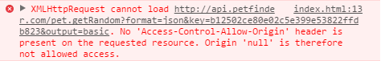

Our First Request
Let's jump right into this and demonstrate our first request. This request will be asking Petfinder to return basic information for a random pet in their database.
$(document).ready(function() {
$.ajax({
type: 'GET',
url: 'http://api.petfinder.com/pet.getRandom?key=yourKeyHere&output=basic&format=json&callback=?',
dataType: 'json',
success: function(data) {
console.log(data);
var x = JSON.stringify(data)
$(".output").html(x);
}
});
});
This is the result of our API request.
{"@encoding":"iso-8859-1","@version":"1.0","petfinder":{"pet":{"options":{"option":[{"$t":"hasShots"},{"$t":"altered"},{"$t":"housetrained"}]},"status":{"$t":"A"},"contact":{"phone":{"$t":"708 829 6013 "},"state":{"$t":"IL"},"address2":{},"email":{"$t":"catvandotnr@yahoo.com"},"city":{"$t":"Maywood"},"zip":{"$t":"60153"},"fax":{},"address1":{}},"age":{"$t":"Adult"},"size":{"$t":"M"},"media":{"photos":{"photo":[{"@size":"pnt","$t":"http://photos.petfinder.com/photos/pets/30089000/1/?bust=1408636210&width=60&-pnt.jpg","@id":"1"},{"@size":"fpm","$t":"http://photos.petfinder.com/photos/pets/30089000/1/?bust=1408636210&width=95&-fpm.jpg","@id":"1"},{"@size":"x","$t":"http://photos.petfinder.com/photos/pets/30089000/1/?bust=1408636210&width=500&-x.jpg","@id":"1"},{"@size":"pn","$t":"http://photos.petfinder.com/photos/pets/30089000/1/?bust=1408636210&width=300&-pn.jpg","@id":"1"},{"@size":"t","$t":"http://photos.petfinder.com/photos/pets/30089000/1/?bust=1408636210&width=50&-t.jpg","@id":"1"},{"@size":"pnt","$t":"http://photos.petfinder.com/photos/pets/30089000/2/?bust=1408636210&width=60&-pnt.jpg","@id":"2"},{"@size":"fpm","$t":"http://photos.petfinder.com/photos/pets/30089000/2/?bust=1408636210&width=95&-fpm.jpg","@id":"2"},{"@size":"x","$t":"http://photos.petfinder.com/photos/pets/30089000/2/?bust=1408636210&width=500&-x.jpg","@id":"2"},{"@size":"pn","$t":"http://photos.petfinder.com/photos/pets/30089000/2/?bust=1408636210&width=300&-pn.jpg","@id":"2"},{"@size":"t","$t":"http://photos.petfinder.com/photos/pets/30089000/2/?bust=1408636210&width=50&-t.jpg","@id":"2"}]}},"id":{"$t":"30089000"},"shelterPetId":{},"breeds":{"breed":[{"$t":"Domestic Long Hair"},{"$t":"Tortoiseshell"}]},"name":{"$t":"Goldfinger"},"sex":{"$t":"F"},"description":{"$t":"Goldfinger is a sweet and shy girl that is just beginning to come out of her shell. She seems to be quite intimidated by the high-activity foster home she is in, but in times of quiet she's proven herself to be incredibly sweet and not averse to TLC. In the right environment and with one-on-one caring attention, she would flourish into the incredible sweetheart that we've had glimpses of so far. If you want to meet this lovely girl to get an idea of what a sweetheart she is, make an appointment with CatVando! :)"},"mix":{"$t":"yes"},"shelterId":{"$t":"IL570"},"lastUpdate":{"$t":"2014-11-11T15:14:41Z"},"animal":{"$t":"Cat"}},"@xmlns:xsi":"http://www.w3.org/2001/XMLSchema-instance","header":{"timestamp":{"$t":"2017-03-01T00:36:58Z"},"status":{"message":{},"code":{"$t":"100"}},"version":{"$t":"0.1"}},"@xsi:noNamespaceSchemaLocation":"http://api.petfinder.com/schemas/0.9/petfinder.xsd"}}
This giant JSON string contains all of the desired information from our API request. We are able to see this because of the
JSON.stringify(data) function which turned the object sent to use by Petfinder into a JSON string. Unfortunately
this isn't very pleasant to look at. What we've also done in our code is log the object sent to use by Petfinder to the console.
The console presents this data in a nice way like shown below.
You can access this by pressing F12 on any webpage and selecting the "console" tab at the top of the new window. I've already
expanded a few tabs to show the string contained in the name "name". As explained in the previous section
we can access this information by using the dot operator on data. In this case it will look like data.petfinder.pet.name.$t.
which will return the string "Goldfinger". This is the name of a random animal in Petfinder's database. All other values associated
with this JSON object will belong to the Goldfinger.
API Magic
The magic of an API call is all in the url. In one string we say who to extract information from, what information we want extracted, validate our call with an API key, and declare the format we want the information returned in. That's a lot to remember. Thankfully, this is divided into seperate pieces in the form of http://api.petfinder.com/my.method?key=12345&arg1=foo&token=67890&sig=abcdef Let's break down this url to make things easier.
- http://api.petfinder.com/: lets jQuery know that we want information from Petfinder and that's where we can find it. Pretty simple so far.
- my.method?: Here is where you declared what kind of information we want. In our case, we asked for the method pet.getRandom which returns information from a random pet in Petfinder's database. The ? at the end of my.method signifies that we are using a "GET" request and that query arguments are to follow.
- key=12345: This is where you enter your API Key in place of 12345.
- &arg1=foo: The & symbol seperates query arguments from one another. arg1=foo is a query argument specific to our my.method. These arguments change our search criteria. In our example we requested that Petfinder return basic information about the pet using the argument output=basic. Multiple arguments can be present in the query and a list of arguments for each method can be found here.
- token=67890&sig=abcdef: These arguments are used for security purposes when requesting shelter records. They are optional in all other method calls. We will not be using them, but more information on Petfinder's security can be found here.
Why jQuery?
To put it simply, jQuery makes things much easier than other approaches to performing API calls. This has a lot to do with
HTTP access control (CORS). CORS prevents requests from
a webpage to a domain on a different server. This means that typical AJAX methods
will not work, like XMLHttpRequest() and you will get an error message in the console that looks like: 
We are able to get around this using a combination of jQuery and JSONP. JSONP
stands for "JSON with padding". While JSON requests are done using XMLHttpRequest(), JSONP requests are done inside of a script tag
whose source is set to the target URL. The JSONP response is passed as an argument to a callback function which is why we added the argument
&callback=? to the end of our example url. jQuery requires &callback=? to be included in the request and handles all of
the details with returning the response. There is a great explaination of JSONP in stackoverflow.